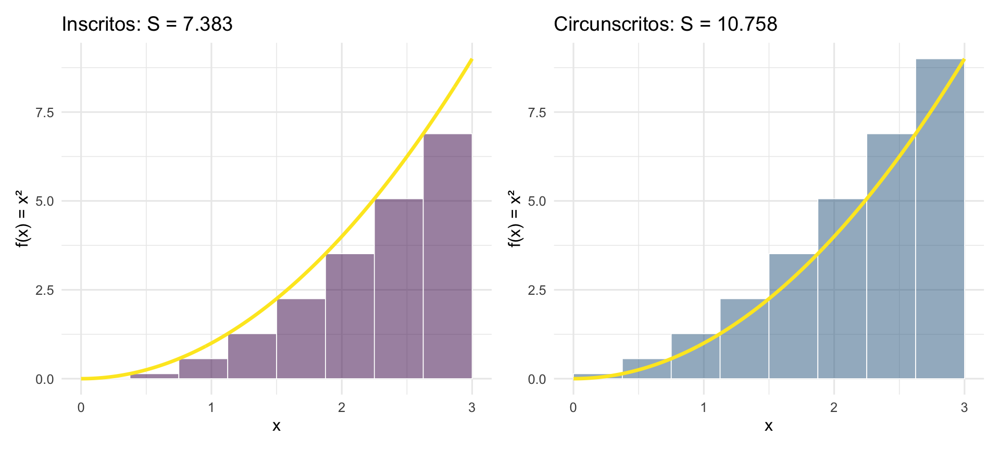

library(ggplot2)
library(patchwork)
f <- function(x) x^2
a <- 0; b <- 3; n <- 8
dx <- (b - a) / n
xi <- seq(a, b, by = dx)
x_curve <- seq(a, b, length.out = 400)
df_curve <- data.frame(x = x_curve, y = f(x_curve))
make_rects <- function(x_pts) {
data.frame(
xmin = x_pts[-length(x_pts)],
xmax = x_pts[-1],
ymin = 0,
ymax = f(x_pts[-length(x_pts)])
)
}
make_rects_right <- function(x_pts) {
data.frame(
xmin = x_pts[-length(x_pts)],
xmax = x_pts[-1],
ymin = 0,
ymax = f(x_pts[-1])
)
}
df_left <- make_rects(xi)
df_right <- make_rects_right(xi)
base_t <- theme_minimal(base_size = 12)
S_esq <- sum(f(xi[-length(xi)]) * dx)
S_dir <- sum(f(xi[-1]) * dx)
p1 <- ggplot() +
geom_rect(data = df_left, aes(xmin=xmin, xmax=xmax, ymin=ymin, ymax=ymax),
fill = "#440154", alpha = 0.5, color = "white", linewidth = 0.3) +
geom_line(data = df_curve, aes(x, y), color = "#FDE725", linewidth = 1.2) +
labs(title = sprintf("Inscritos: S = %.3f", S_esq),
x = "x", y = "f(x) = x²") + base_t
p2 <- ggplot() +
geom_rect(data = df_right, aes(xmin=xmin, xmax=xmax, ymin=ymin, ymax=ymax),
fill = "#31688e", alpha = 0.5, color = "white", linewidth = 0.3) +
geom_line(data = df_curve, aes(x, y), color = "#FDE725", linewidth = 1.2) +
labs(title = sprintf("Circunscritos: S = %.3f", S_dir),
x = "x", y = "f(x) = x²") + base_t
p1 + p2